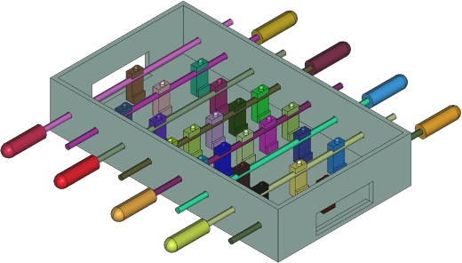
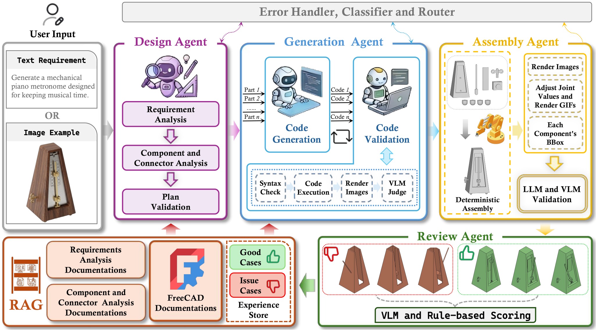
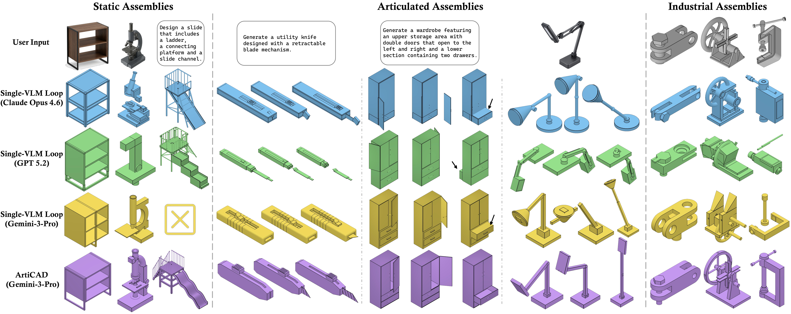
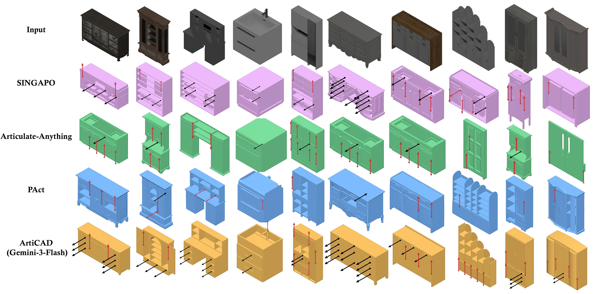

03ArtiCADOutput

ArtiCAD is the first training-free multi-agent system that generates editable articulated CAD assemblies from text or images, with early connector planning and simulation-ready URDF export.
Parametric Computer-Aided Design (CAD) of articulated assemblies is essential for product development, yet generating these multi-part, movable models from high-level descriptions remains unexplored. To address this, we propose ArtiCAD, the first training-free multi-agent system capable of generating editable, articulated CAD assemblies directly from text or images. Our system divides this complex task among four specialized agents: Design, Generation, Assembly, and Review. One of our key insights is to predict assembly relationships during the initial design stage rather than the assembly stage. By utilizing a Connector that explicitly defines attachment points and joint parameters, ArtiCAD determines these relationships before geometry generation, effectively bypassing the limited spatial reasoning capabilities of current LLMs and VLMs. To further ensure high-quality outputs, we introduce validation steps in the generation and assembly stages, accompanied by a cross-stage rollback mechanism that accurately isolates and corrects design- and code-level errors. Additionally, a self-evolving experience store accumulates design knowledge to continuously improve performance on future tasks. Extensive evaluations on three datasets (ArtiCAD-Bench, CADPrompt, and ACD) validate the effectiveness of our approach. We further demonstrate the applicability of ArtiCAD in requirement-driven conceptual design, physical prototyping, and the generation of embodied AI training assets through URDF export.
ArtiCAD exports generated assemblies as URDF assets with preserved joint types, joint axes, and motion limits for articulated visualization and downstream robotic simulation. Several generated examples can be previewed directly below.
Beyond the paper’s core evaluation, our broader pipeline can optionally retrieve materials and attach texture or physical attributes for downstream rendering or simulation. This web demo does not run collision-aware simulation, so interpenetration may appear in the viewer; this does not occur in full simulation with collisions enabled.
ArtiCAD separates relationship planning from geometry generation. Instead of inferring how finished parts should connect, it predicts assembly relationships and connector specifications at design time, before any geometry is generated, so assembly reduces to deterministic frame alignment.
Named connectors and joint parameters are specified at design time, giving each part an explicit connection plan before geometry generation.
With connectors specified early, assembly reduces to deterministic frame alignment instead of late spatial inference over finished parts.
Validation classifies failures as DESIGN or CODE, then re-invokes only the responsible stage for targeted rollback and repair.
A self-evolving experience store accumulates reusable design knowledge and retrieves it for future tasks without model fine-tuning.

Four-agent implementation
Design Agent. Reads text, images, or both and produces a kinematic plan with parts, named connectors, and typed joint specifications.
Generation Agents. Generate editable FreeCAD code for each part while realizing the planned connector frames on geometry.
Assembly Agent. Assembles parts by deterministically aligning matched connector pairs, so final assembly does not depend on inferring relationships from shape alone.
Review Agent. Checks geometry and motion, scores the final output, and stores reusable cases for later tasks.
We compare ArtiCAD against strong baselines on open-ended assembly design and articulated-object reconstruction.

ArtiCAD-Bench comparison against the Single-VLM Loop baseline.

ACD comparison against SINGAPO, Articulate-Anything, and PAct.Black arrows: prismatic joints. Red arrows: revolute joints.
@misc{shui2026articadarticulatedcadassembly,
title={ArtiCAD: Articulated CAD Assembly Design via Multi-Agent Code Generation},
author={Yuan Shui and Yandong Guan and Zhanwei Zhang and Juncheng Hu and Jing Zhang and Dong Xu and Qian Yu},
year={2026},
eprint={2604.10992},
archivePrefix={arXiv},
primaryClass={cs.CV},
url={https://arxiv.org/abs/2604.10992},
}